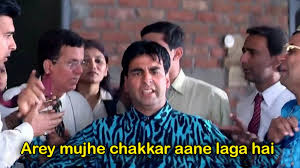
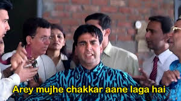

Importance In Society
Memes address social ills, values, and anxieties such as gun violence, good music, and abortion. Memes are the latest and most efficient form of satire today they address societal ills, anxieties, and values through humor and relatable. Being the social media commentary outlets that memes are, makes them important and valuable because it enables the public to give their opinion on those societal ills, values, and anxieties that contemporary society has. Memes not only are a way for society as a whole to come together and share culture but it is also a creative and humorous way to get other people to see another’s opinion.
☟ Memes Templates ☟

 
